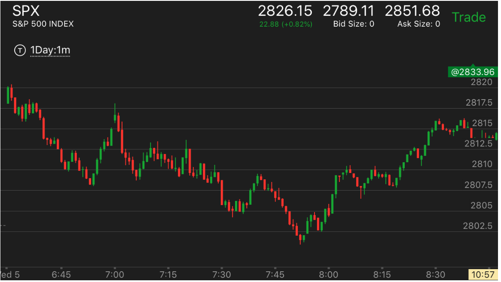
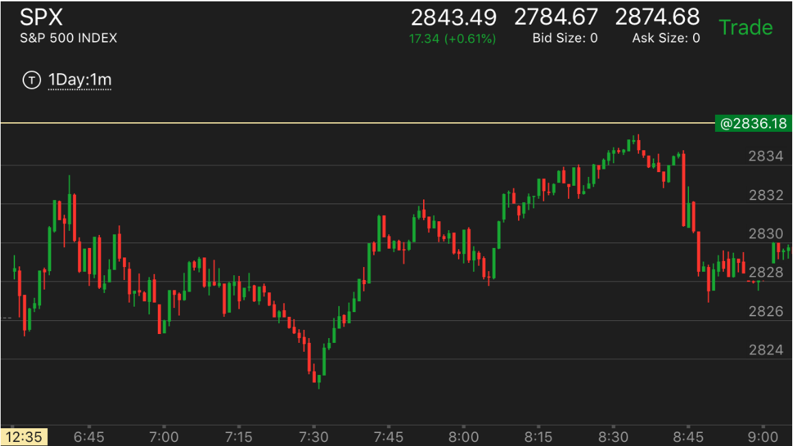
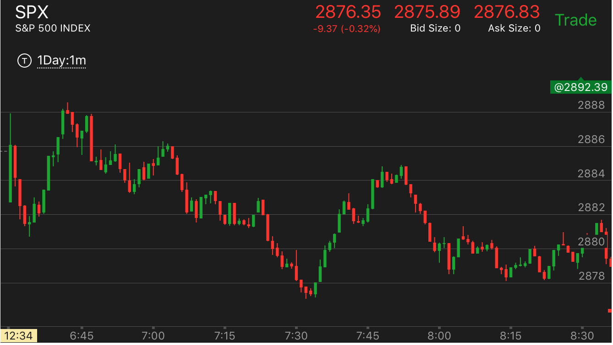

连续的缓慢下跌和上涨，形成反转
- 这个走势关键在于，它要有一段平稳的时间，而不是不停的走低或者走高。这个平稳的时间可以震荡，也可以反向运动。
平稳时间的长短在于第一段下跌的时间，如果第一段下跌时间很短，那么平稳时间可以不长，如果第一段下跌时间很长。
那么平稳时间也要相应的延长。只有这样，才能让人有下跌/上涨已经结束的感觉，这样再次运动才有突然的意外的感觉。
- 一定要先下跌或者上涨，然后走平，或者震荡很久，然后再次连续的下跌上涨。从直觉上看，在走平和震荡后，人以为要反转了。结果出现了连续的走势，
很强，让人印象深刻，感到意外。这样形成了直觉。
- 它的反向走势可以很慢，也可以很快，不一定要很慢才是反向走势。
- 这个就是两段走势，但是它的第二段是一个连续的缓慢运动。

图示：6：35第一浪下跌，然后走平，震荡反弹。6：45突然连续的下跌。
好像很强。其实没有跌很多。这样就形成了第二浪的底部。它的第一浪只有一分钟。所以后面震荡10分钟，再次连续下跌，
也给人以突然的感觉。

图示：开盘后，下跌处于跌势，它在6：50出现了三次转折，要反弹。
但是反弹太快了。反而结束了。然后它开始长时间震荡。开盘的下跌用了15分钟。而它7：40开始了连续下跌。
中间用了40分钟震荡。所以有突然的感觉。这样就是一个底部了。7：50开始反弹。

图示：开盘后走低，然后立刻冲高，速度很快。这样其实说明一定会跌的。
它冲高后，下跌，震荡很久。7：20出现了连续下跌。比较突然。这样就是底部了。
关键是它的反弹很快。很快就超过了前面的走平点。但是这个不能说明它就不是底部。它后面很快拉回。
填补真空。只能说它的升势很强。即使如此，它拉回后，总的时间其实和前面下跌的时间差不多。并没有很快。
而且它后面冲高后，快速拉回，仍然低于前面的下跌高点。这样看起来，时间就变得很长了。所以相对论走势
还是得到了遵守。

图示：
1. 8:00开始下跌，它开始下跌幅度很大。反弹后，再次下跌。这是因为它
中间没有停顿的样子，所以不是这个走势。8：30开始，它出现了长时间的走平，震荡，然后8：55，它再次连续的下跌。
这个让做空的人意外和高兴。结果却是反转的走势。
2. 反弹后，它走平，9：10再次出现了连续的上涨，这个同时也属于积累走势。所以到达顶部。开始下跌。
3. 下跌走势很快在10：20快速下跌后，结束。再次上涨。而在11：20出现了连续上涨而结束。
4. 从这个例子也可以看出，它从高点快速下跌，不代表未来会回到原位的。取决于具体的走势。
虽然反转，结果反弹的走势不好，很快出现了顶部，没能全面反转

图示：7：30出现了连续的下跌。形成了底部。结果它反弹后，第一浪形状可以。第二浪不好，它出现了
相对论的头部。就是走低后，很快冲高，冲高的速度太快了。这样没有能够全面反转，反而开始下跌。后面创新低。可见就算是底部，如果反弹的形状
不对，也不一定就全面反转。
相反的真实的下跌，不是反转的例子

图示：8:30开始的下跌，不断的走低，反弹，再次走低，基本没有停顿。而且每次下跌
的时间很短，幅度也不大。这样才是可以持续的下跌走势。
出现了连续下跌，却没有立刻反转，而是在底部走平。缓慢出现新低。这样不是反转。

图示：8：10出现了连续下跌。似乎是这个走势。结果它在底部走平。中间还缓慢出现了新低。这样就不是这个走势。
它在反弹后，填补真空。大跌。说明这个走势，只有立刻反弹才是反转走势。